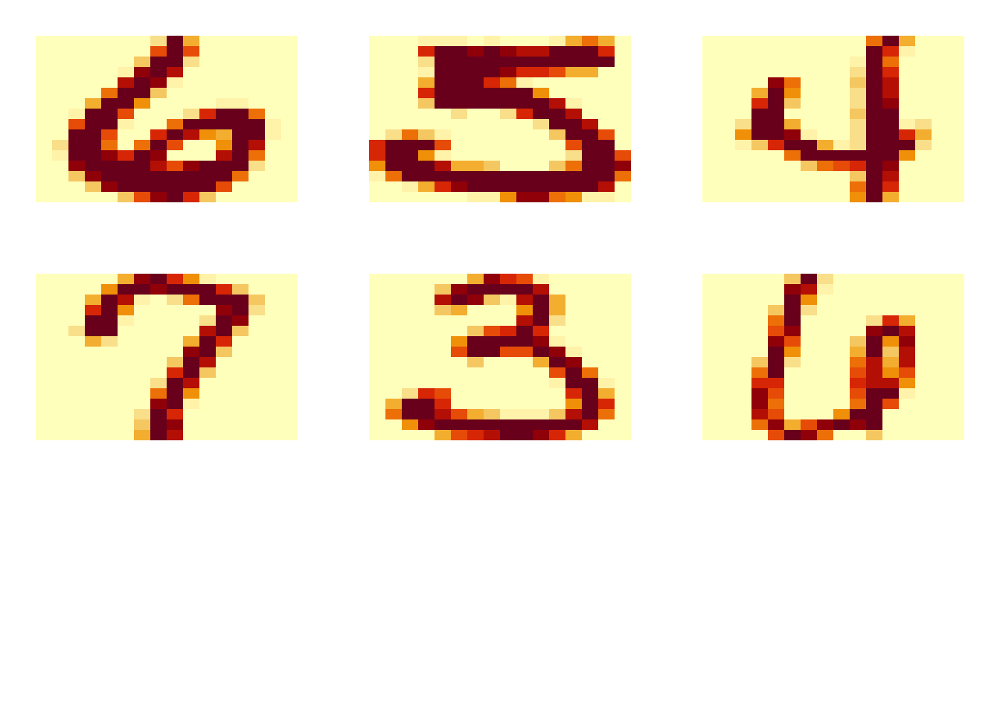
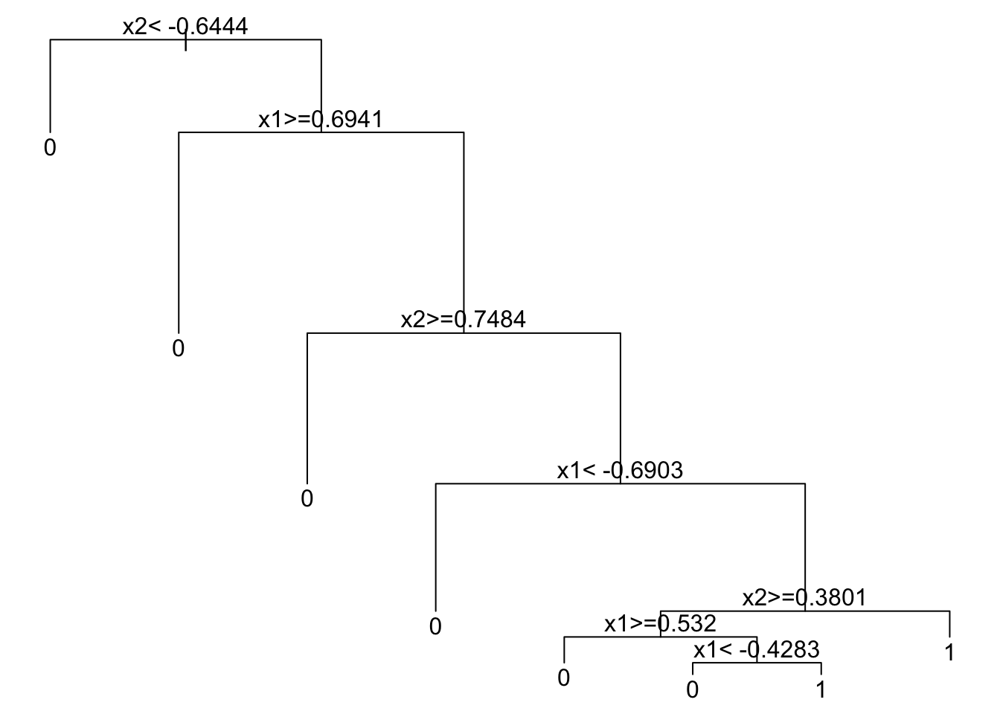

9.1 Toy Example
Let’s simulate two uniforms in \([-1,1]\) where 90% from Class 1 (blue) are within the circle \(x^2_1 + x^2_2 <0.75\) and 90% from Class 2 orange are outside the circle.
library(rpart)
x1 = runif(500, -1, 1)
x2 = runif(500, -1, 1)
y = rbinom(500 , size = 1 , prob = ifelse(x1^2 + x2^2 < 0.6, 0.9, 0.1))
plot(x1, x2, col = ifelse(y == 1, "darkblue", "darkorange"), pch = 16)
symbols(0, 0, circles = sqrt(0.6), add = TRUE, inches = FALSE, cex = 2)
A classification tree model is recursively splitting the feature space such that eventually each region is dominated by one class.
rpart.fit = rpart(as.factor(y)~x1+x2, data = data.frame(x1, x2, y))
par(mar=rep(0.5, 4))
plot(rpart.fit)
text(rpart.fit) 
We can also extract the details for the splits:
## CP nsplit rel error xerror xstd
## 1 0.19915254 0 1.0000000 1.0000000 0.04729998
## 2 0.12500000 2 0.6016949 0.6906780 0.04441317
## 3 0.01906780 4 0.3516949 0.4406780 0.03845628
## 4 0.01412429 7 0.2881356 0.4237288 0.03789946
## 5 0.01000000 10 0.2457627 0.3898305 0.03671360We can also prun the tree (as before) and plot it using rpart.plot:
pruned.tree = prune(rpart.fit, cp = 0.041)
rpart.plot(pruned.tree, type = 2, extra = 104, fallen.leaves = TRUE)
Classification Trees
Toy Example
\(X_1, X_2 \sim Uniform[-1,1]\)
\(\rightarrow\) 90% from Class 1 (blue}) \(\Rightarrow\) within the circle \(x^2_1 + x^2_2 <0.75\)} \(\rightarrow\) 90% from Class 2 (orange}) are outside the circle.
Previous classification methods require either a transformation of the space (SVM) or a distance measure (kNN, kernel methods).
The tree solves this problem by directly cutting the feature space using a binary splitting rule}} in the form of \(\mathbf{1}_{\{x\leq c\}}\).
Toy Example
includegraphics[scale=0.2]{unif1.png}
Toy Example
includegraphics[scale=0.2]{unif2.png}
Toy Example
includegraphics[scale=0.2]{unif3.png}
Why Tree-based Methods?
Tree-based Methods are
Non-parametric, flexible model structures.
Easy to interpret.
Invariant under any monotone transformation of predictors.
Handling high-dimensional data without modifying the algorithm.
Handling Variable selection and interactions between variable automatically.
Ensemble tree models – High prediction accuracy.
Single Tree Methods: Recursive Partitioning
How tree-based methods work?
Initialize the root node: all training data.
Find a splitting rule \(\mathbf{1}_{\{X^{(j)} \leq c\}}\) and split the node
Recursively apply the procedure on each child node.
includegraphics[scale=0.45]{TreeC}
Classification Trees
Building Classification Trees
Where to split?
Continuous Predictors
Categorical Predictors
When to stop?
How to predict at each leaf node?
Splitting Rules: Continuous Predictors
Splitting of continuous predictors are in the form of \(\mathbf{1}_{\left \{X^{(j)} \leq c \right \}}\)}.
Consider a node \(\mathcal{T}\): we want to split the node into two children nodes}.
Evaluate the overall impurity of \(\mathcal{T}\), assuming that there are \(K\) different classes of the outcome.
We check the gain of the impurity measure and pick the one that leads to a large (the largest) reduction in the measure.
Splitting Rules: Continuous Predictors
Gain of an Impurity Measure
\[\Phi(j,s) = i(t) - \Bigl( p_R \cdot i(t_R) + p_L \cdot i(t_L) \Bigr)\]} where \[\begin{align*} i(t) &= I \Bigl( \hat{p_t}(1), \ldots, \hat{p}_{t}(K) \Bigr)\\ \hat{p_t}(j) &= \text{ frequency of class } j \text{ at node } t\\ I(\ldots) &= \text{ an impurity measure } \end{align*}\]
Pick a split \((j, s)\)} that leads to a large reduction in the impurity measure}.
Splitting Rules: Continuous Predictors
If we propose a split \(\mathbf{1}_{\left \{X^{(j)}\leq c \right \}}\), then this separates all subjects in the node into two disjoint parts: \(\mathcal{T}_{L}\) and \(\mathcal{T}_{R}\).
For each child node, we evaluate the Impurity: \(I(\mathcal{T}_{L})\)} and \(I(\mathcal{T}_{L})\)}.
The reduction of impurity using an Impurity index is measured by
\[\Phi(j,s) = I(\mathcal{T}) - \Biggl(\underbrace{\frac{N_{\mathcal{T}_L}}{N_{\mathcal{T}}}}_{\hat{p}_L} \, I(\mathcal{T}_L) - \underbrace{\frac{N_{\mathcal{T}_R}}{N_{\mathcal{T}}}}_{\hat{p}_R}\, I(\mathcal{T}_R) \Biggr)\] where \(N_{\mathcal{T}_L}\), \(N_{\mathcal{T}_R}\), \(N_{\mathcal{T}}\) are the sample sizes for the corresponding nodes.
The method goes through all variables \(j\) and all cutting points \(c\) to find the split with the best score.
Impurity Measure
Definition
An impurity measure is a function \(I(p_1, \ldots, p_K)\) where \(p_j \geq 0\) and \(\sum_j p_j =1\), with properties:
- maximum occurs at \((1/K, \ldots, 1/K)\)
- minimum occurs at \(p_j=1\) (the purest node)
- \(I(\ldots)\) is a symmetric function of \(p_1, \ldots, p_K\), i.e. permutation of \(p_j\) does not affect \(I\).
Ideally, we want the impurity measure to be small for each node.
Popular Impurity Measures in Classification
Gini Index (CART)
\[\text{Gini}(\mathcal{T}) = \sum_{k=1}^{K} \hat{p_k} (1- \hat{p_k}) = 1 - \sum_{k=1}^{K} \hat{p_k}^2\]} where \(\hat{p_k} = \frac{\sum_i \mathbf{1}_{\{y_i=k\}} \cdot \mathbf{1}_{\{x_i \in \mathcal{T}\}}}{\mathbf{1}_{\{x_i \in \mathcal{T}\}}}\) is within node frequency of class \(k\), and assuming that there are \(K\) different classes of the outcome \(1, \ldots, K\).
Shannon Entropy (ID3/C4.5)
\[\text{Entropy}(\mathcal{T}) = - \sum_{k=1}^{K} \hat{p_k} \log\left( \hat{p_k} \right)\]}
Misclassification Rate
\[\text{Error}(\mathcal{T}) = 1- \max_{k=1,\ldots, K} \hat{p_k}\]
Special Case: \(K=2\)
Gini Index \[2p(1-p)\]
Shannon Entropy \[p\log\frac{1}{p} + (1-p) \log \frac{1}{1-p}\]
Misclassification Error/Rate \[\min(p, 1-p)\]
Popular Impurity Measures in Classification
includegraphics[scale=0.45]{Impurities}
Remarks on Impurity Measures
Smaller value of the measure means that the node is more ``pure}’’, hence, there is a higher certainty when we predict a new value.
The idea of splitting a node is that, we want the two resulting children nodes to contain less variation \(\rightarrow\) as ``pure’’ as possible}.
Calculate this error criterion both before and after the split and see what cut-off point gives us the best reduction of error.
Gini Impurity Index
For an internal node \(\mathcal{T}\) \[\Phi_{Gini}(j,c) = \text{Gini}(\mathcal{T}) - \Biggl(\frac{N_{\mathcal{T}_L}}{N_{\mathcal{T}}}\, \text{Gini}(\mathcal{T}_L) - \frac{N_{\mathcal{T}_R}}{N_{\mathcal{T}}}\, \text{Gini}(\mathcal{T}_R) \Biggr)\]
The left child node (\(\mathcal{T}_{L}\)) and the right child node (\(\mathcal{T}_{R}\)) denote the two children nodes resulted from a potential split on the \(j\)th variable at a cut-off point \(c\), such that \[\begin{align*} \mathcal{T}_{R} &= \left\{x: x\in \mathcal{T},\, x_j > c \right\}\\ \mathcal{T}_{L} &= \left\{x: x\in \mathcal{T},\, x_j \leq c \right\} \end{align*}\]
\(\text{Gini}(\mathcal{T})\) calculates the uncertainty of the entire node \(\mathcal{T}\), while the second quantity is a summary of the uncertainty of the two potential children nodes.
A larger score indicates a better split, and we may choose the best index \(j\) and cut-off point \(c\) to proceed \[\arg \max_{j,c} \Phi_{Gini}(j,c)\]
Popular Impurity Measures in Classification}
A Binary classification Problem
\[\begin{align*} \Phi_{Gini} &= 0.420 - (3/10 \cdot 0 + 7/10 \cdot 0.490) = 0.077\\ \Phi_{Entropy} &= 0.611 - (3/10 \cdot 0 + 7/10 \cdot 0.683) = 0.133\\ \Phi_{Error} &= 3/10 - (3/10 \cdot 0 + 7/10 \cdot 3/7) = 0 \end{align*}\]
Comparing Measures
Gini Index and Shannon Entropy are more sensitive to the changes in the node probability.
They prefer to create more ``pure” nodes.
Misclassification error can be used for evaluating a tree, but may not be sensitive enough for building the tree.
Shannon’s Entropy and Gini Index} are strictly concave} measures, which implies that the corresponding goodness-of-split measure \(\Phi\) is always positive (unless the frequencies in both nodes are the same) which makes them very popular in growing trees.
Splitting Rules: Categorical Predictors
For categorical predictor \(X^{(j)}\) taking values in \(\{1, \ldots, M\}\), we search for a subset \(\mathcal{A}\) of \(\{1, \ldots, M\}\), and evaluate the child nodes created by the splitting rule
\[1_{\bigl \{X^{(j)} \in A \bigr \}}\]
Maximum of \(2^{M-1} -1\)} number of possible splits.
When \(M\) is too large, this can be computationally intense.
Some heuristic methods are used, such as randomly sample a subset of categories to one child node, and compare several random splits.
Random Forests
Weak and Strong Learners
Can aggregated weak learners'' (unstable, less accurate) can be astrong learner’’.
Bagging, Boosting, and Random Forests are all methods along this lines.
Bagging and Random Forests learn individual trees with some random perturbations, and ``average’’ them.
Boosting progressively learn models with small magnitude, then ``adds’’ them.
In general: Boosting, Random Forests \(\succ\) Bagging \(\succ\) Single Tree.
Bagging Predictors for Classification
Bootstrap sample with replacement: some observations can be repeated multiple times.
Fit a CART model to each bootstrap sample (may require tuning using CV).
To combine each learner, for classification problems: \[\hat{f}_{bag}(x) = \text{ Majority Vote } \Bigl \{\hat{f}_b(x )\Bigr \}_{b=1}^{B}\]
Dramatically reduce the variance of individual learners.
CART can be replaced by other weak learners.
CART vs. Bagging
CART vs. Bagging %on our previous example, both are pruned
Bagging Remarks
Bagging can dramatically reduce the variance of unstable ``weak learners” like trees, leading to improved prediction.
The simple structure of trees will be lost due to bagging, hence it is not easy to interpret.
However, the performance of bagging is oftentimes not satisfactory. Why?
Different trees have high correlation which makes averaging not very effective.
How to de-correlate trees?
Random Forests
Random forests are equipped with this bootstrapping strategy, but also with other randomness and mechanism. A Random forest can be controlled by several key parameters:
Number of trees, many controls the stability. We typically want to fit a large number of trees.
How many samples to use when fitting each tree. In practice, we often use the training sample size if sampled with replacement.
Number of randomly sampled variable to consider at each internal node. This need to be tuned for adaptiveness to sparse signal (large mtry) or highly correlated features (small mtry).
% Stop splitting when the node sample size is no larger than node size. This works similar to k in a KNN model. However, its effect can be greatly affected by other tuning parameters.
%Using the randomForest package, we can fit the model. It is difficult to visualize this when p>2. But we can look at the testing error.
Boosting
Boosting Overview
AdaBoost
Training Error Bound
Gradient Boosting
Boosting
Consider producing a sequence of learners: \[F_T(x) = \sum_{t=1}^{T} f_t(x)\]
How to train each \(f_t(x)\)? At the \(t\)-th iteration, given previously estimated \(f_1, \ldots, f_{t-1}\), we estimate a new function \(h(x)\)} to minimize the loss: \[\min_h \sum_{i=1}^{n} L \Biggl(y_i, \,\, \sum_{k=1}^{t-1} f_k(x_i) + h(x_i) \Biggr)\]}
Instead of using the entire \(h(x)\), we only use a small fraction} of it, and add \(\alpha_t h(x)\) to the current model. Then, proceed to the next iteration.
Boosting}
Boosting} is an additive model, but its different from generalized additive model, in which each weak learner only involves one variable, and we fit \(p\) such functions.
In boosting, each \(f_t(x)\) can be very flexible, and we may fit a large number of functions.
Boosting is also different from random forests, another additive model. In random forests, each tree is generated independently, so they cannot borrow information from each other.
AdaBoost} (Freund and Schapire, 1997) is a special case of this framework with Exponential loss for classification.
For this setting, we use labels \(y_i\in\{-1, 1\}\).
AdaBoost Algorithm
1.] Initiate weights \(w_i^{(1)} = 1/n,\, i=1,2, \ldots, n\). 2.] For \(t=1:T\), repeat (a)–(d)
(a)] Fit a classifier \(f_t(x) \in \{-1, 1\}\) to the training data, with individual weights \(w_i^{(t)}\) (b)] Compute the training error at \(t\) \[\varepsilon_t = \sum_i w_i^{(t)} \mathbf{1}_{\{y_i \neq f_t(x_i)\}}\] (c)] Compute
\[\alpha_t = \frac{1}{2} \log \frac{1-\varepsilon_t}{\varepsilon_t}\]} (d)] Update weights \[w_i^{(t+1)} = \frac{w_i^{(t)}}{Z_t} \exp \Bigl\{ -\alpha_t} y_i f_t(x_i) \Bigr\}\] where \(Z_t\) is a normalization factor to keep \(w_i^{(t+1)}\) a distribution: \[Z_t = \sum_{i=1}^{n} w_i^{(t)} exp\Bigl\{-\alpha_t} y_i f_t(x_i) \Bigr\}\]
AdaBoost Algorithm
3.] Output the final model \[F_T(x) = \sum_{t=1}^{T} \alpha_t} f_t(x)\]
And the classification rule}: \(sign(F_T(x))\)}.
Example
At each iteration, we build a tree model \(f_t(x)\) with just one split.
The final model is stacked with all tree models.
Example}
At the first iteration, the tree splits at 0.25 for \(X_1\)
This makes the three positive cases on the right hand side to increase their weights
Example
At the second iteration, the tree splits at 0.65 for \(X_2\)
This further adjusts the weights, along with calculating \(\alpha_t\) at each step.
Example
At the third iteration, the tree splits at 0.85 for \(X_1\)
This produces the final model: \[F_3(x) = 0.4236 f_1(x) + 0.6496 f_2(x) + 0.9229 f_3(x)\]
AdaBoost: Intuition
Initial step: treat all subject with equal weights.
Learn a classifier \(f_t(x)\) and inspect which subjects got mis-classified.
Put more weights on the mis-classified subjects for the next iteration.
Add \(\alpha_t f_t(x)\)} to the existing model and train the next iteration using the updated weights.
Boosting
Why \(\alpha_t\) is chosen to be \(\alpha_t = \frac{1}{2} \log \frac{1-\varepsilon_t}{\varepsilon}\)?
Why the weak classifier is chosen to minimize the weighted error?
What can we say about the performance of the final model \(F_T(x)\)?
Subject Weights}
Let’s start with analyzing the weight after the final iteration:
\[w_i^{(T+1)} = \frac{1}{Z_T} w_i^{(T)} \exp \Bigl\{ -\alpha_t y_i f_T(x_i) \Bigr\} \]}
Note that for \(w_i^{(T)}\), we can also further backtrack it into \(T-1\): \[w_i^{(T)} = \frac{1}{Z_{T-1}} w_i^{(T-1)} \exp \Bigl\{ -\alpha_t y_i f_{T-1}(x_i) \Bigl\} \]
Hence, we can track this all the way back to the first iteration.
Subject Weights
This gives \[\begin{align*} w_i^{(T+1)} &= \frac{1}{Z_1 \cdot \cdot \cdot Z_T} w_i^{(1)} \prod_{t=1}^{T} \exp \Bigl\{ -\alpha_t y_i f_t(x_i) \Bigr\}\\ &= \frac{1}{Z_1 \cdot \cdot \cdot Z_T} \frac{1}{n} \prod_{t=1}^{T} \exp \Bigl\{ -\alpha_t y_i f_t(x_i) \Bigr\} \\ &= \frac{1}{Z_1 \cdot \cdot \cdot Z_T} \frac{1}{n} \exp \Bigl\{ - y_i \sum_{t=1}^{T} \alpha_t f_t(x_i)}\Bigr\}\\ \end{align*}\]
Note that $_{t=1}^{T} _t f_t(x_i) $} is the just the final model at the \(T\)th iteration, i.e., \(F_T(x_i)\).
Subject Weights
Note that the weights sum up to 1. So, we can write \[1 = \sum_{i=1}^{n} w_i^{(T+1)} = \frac{1}{Z_1 \cdot \cdot \cdot Z_T} \frac{1}{n} \sum_{t=1}^{T} \exp \Bigl\{ - y_i F_T(x_i) \Bigr\}\]
or \[Z_1 \cdot \cdot \cdot Z_T = \frac{1}{n} \sum_{t=1}^{T} \exp \Bigl\{ - y_i F_T(x_i) \Bigr\} \]
On the right-hand side, we have the exponential loss.
The Exponential Loss
Let’s check some facts:
Correctly classified: \(sign(y) = sign(f(x))\)} and \(exp(-yf(x)) >0\)
Incorrectly classified: \(sign(y)=-sign(f(x))\)} the \(exp(-yf(x))>1\)
Hence, the exponential loss is larger than 0/1 loss: \[\begin{align*} & Z_1 \cdot \cdot \cdot Z_T = \frac{1}{n} \sum_{i=1}^{n} \exp \{-y_i F_T(x_i)\}\\ & > \frac{1}{n} \sum_{i=1}^{n} \mathbf{1}_{\{y_i \neq F_T(x_i)\} } \end{align*}\]
The \(Z_t\)s
On the other hand, we can further break down each \(Z_t\).
Notice that \(f_t(x_i)\) is a classification model with output 1 or -1, this either matches or not matches \(y_i\): \[\begin{align*} Z_t &= \sum_{i=1}^{n} w_i^{(t)} \exp \Bigl\{-\alpha_t y_i f_t(x_i) \Bigr\}\\ &= \sum_{y_i= f_t(x_i)}} w_i^{(t)} \exp(-\alpha_t) + \sum_{y_i \neq f_t(x_i)}} w_i^{(t)} \exp(\alpha_t) \\ &= \exp(-\alpha_t) \sum_{y_i= f_t(x_i)} w_i^{(t)} + \exp(\alpha_t) \sum_{y_i \neq f_t(x_i)} w_i^{(t)} \end{align*}\]
The \(Z_t\)s
By our definition,
\[\varepsilon_t = \sum_i w_i^{(t)} \mathbf{1}_{\{y_i \neq f_t(x_i) \}}\] } is the proportion of weights for mis-classified samples}.
Hence, \[Z_t = (1-\varepsilon_t) \exp(-\alpha_t) + \varepsilon_t \exp(\alpha_t)\]
Since we want to minimize we can simply minimize \(Z_1 \cdot \cdot \cdot Z_t\), we can simply minimize \(Z_t\) by choosing \(\alpha_t\)}.
The \(Z_t\)s
Take a derivative} with respect to \(\alpha_t\), we have \[-(1-\varepsilon_t) \exp(-\alpha_t) + \varepsilon_t \exp(\alpha_t) = 0\]
Solving with respect to \(\alpha_t\), we get
\[\alpha_t = \frac{1}{2} \log \frac{1-\varepsilon_t}{\varepsilon_t}\] }
And plug this back into \(Z_t\) \[Z_t = 2 \sqrt{\varepsilon_t (1- \varepsilon_t)}\]
Since \(\varepsilon_t (1- \varepsilon_t)\) can only attain maximum of 1/4, \(Z_t\) must be smaller than 1, and \(Z_1 \cdot \cdot \cdot Z_t\) should converge to 0.
The Training Error}
Alternatively, if we let \(\gamma_t = \frac{1}{2} - \varepsilon_t\) as the improvement from a random model \[\begin{align*} Z_t &= 2\sqrt{\varepsilon_t (1- \varepsilon_t)} = \sqrt{1-4\gamma_t^2}\\ &\leq \exp(-2 \gamma_t^2) \end{align*}\]
The last equation uses the Taylor expansion that \[ \exp(-2 \gamma_t^2) = 1- 4 \gamma_t^2 + \ldots\]
The Training Error
Hence, the AdaBoost training error is bounded above by \[\begin{align*} \text{Training Error} &= \sum_{i=1}^{n} \mathbf{1}_{\{y_i \neq sign(F_T(x_i) ) \} }\\ &= \sum_{i=1}^{n} \exp \Bigl\{ -y_i F_T(x_i)\Bigr\}\\ &= Z_1 \cdot \cdot \cdot Z_T\\ & \leq \exp \Bigl\{ -2 \sum_{t=1}^{T} \gamma_t^2\Bigr\} \rightarrow 0 \end{align*}\] as long as \(f_t(x)\) at each iteration \(t\) is better than random guess.
Remarks
Does the Adaboost outputs a classifier \(F_T(x)\) with small testing error? No. We need to tune \(T\). % Careful! You can easily overfit.
Does the training error of \(F_T(x)\) decreases w.r.t. \(T\)? No. It serves only as the upper bound of 0/1 training error.
After each iteration, Adaboost decreases a particular upper-bound of the 0/1 training error. So in a long run, the training error is going to zero, but not necessarily monotonically.
Can we use a classifier that is worse than random guessing? Yes}. The reverse of that classier can be used (\(\alpha_t<0\)).
In practice, a classification tree model is used as the weak learner.
Remarks
We may also roughly calculate the estimated probability.
Consider the (upper bound) exponential loss \(E\Bigl[\exp(-yF(x)) \Bigr]\) which is \[e^{-F(x)} P(Y=1|x) + e^{F(x)} P(Y=-1|x) \]
The best \(F(x)\) that minimizes this expectation should be (take derivatives in the function above and set to 0): \[-e^{-F(x)} P(Y=1|x) + e^{F(x)} P(Y=-1|x) =0\]
Solving wrt \(F(x)\), we obtain \[\begin{align*} F(x) &= \frac{1}{2} \log \frac{P(y=1|x)}{P(y=-1|x)},\, \text{ where } P(y=1|x) = \frac{e^{2F(x)}}{1+e^{2F(x)}} \end{align*}\]
AdaBoost
AdAaBoost: An Example}
includegraphics[scale=0.4]{boost_iter}
Gradient Boosting
Forward Stage-wise Additive Model
In a more general framework, consider an additive structure: \[F_T(x) = \sum_{t=1}^{T} \alpha_t f(x; \theta_t)\]
Fit a model, by minimizing the loss function \[\min_{\{\alpha_t, \theta_t\}_{t=1}^{T}} \sum_{i=1}^{n} L \bigl( y_i, F_T(x_i)\bigr) \]
We may choose
A suitable loss function} for the problem.
A base learner \(f(x;\theta)\) with parameter \(\theta\), such as linear, tree…
Forward Stage-wise Additive Model
It is difficult to minimize over all \(\{\alpha_t, \theta_t\}_{t=1}^{T}\).
Instead, we do this in a stage-wise fashion. % (recall the connection between Lasso and stage-wise regression)
Algorithm
\begin{enumerate}Set \(F_0(x)=0\).
For \(t=1, \ldots, T\)
Choose \(\{\alpha_t, \theta_t\}\) to minimize the loss \[\min_{\alpha, \theta} \sum_{i=1}^{n} L\Bigl(y_i, F_{t-1}(x_i) + \alpha f(x_i; \theta ) \Bigr)\]
Update \(F_t(x) = F_{t-1}(x) + \alpha_t f(x; \theta_t)\).
Forward Stage-wise Additive Model
AdaBoost is forward stage-wise using exponential loss.
It does not pick an optimal \(f(x; \theta)\) at each step: the tree model is not optimized, we just need some model that is better than random.
Only the step size \(\alpha_t\) is optimized at each \(t\) given the fitted \(f(x; \theta_t)\)
Forward Stage-wise Additive Model}
Another example is the forward stage-wise linear regression.
For each step we use a single variable linear model:
\[f(x,j) = sign \bigl(Cor(X_j, r) \bigr) X_j\]
\(r\) is the residual, as \(r_i = y_i - F_{t-1}(x_i)\) and \(j\) is the index that has the largest absolute correlation with \(r\).
Then we give a very small step size \(\alpha_t\), say, \(\alpha_t = 10^{-5}\) and with sign equal to the correlation between \(X_j\).
\(F_t(x)\) is almost equivalent to the Lasso solution path (as \(t\) changes)
An Alternative View
\(r_i\) is the gradient to the squared-error loss: \[r_{it} = -\Biggl[ \frac{\partial(y_i - F(x_i))^2 }{\partial F(x_i) } \Biggr]_{F(x_i) = F_{t-1}(x_i)}\]
We then fit the weak leaner \(f_t(x)\) to the residuals.
Update the fitted model \(F_t\).
An Alternative View
This can be generalized into any loss function \(L\).
At each iteration \(t\), calculate “pseudo-residuals”, i.e., the negative gradient for each observation \[g_{it} = -\Biggl[ \frac{\partial L(y_i, F(x_i)) }{\partial F(x_i) } \Biggr]_{F(x_i) = F_{t-1}(x_i)}\]
Fit \(f_t(x, \theta_t)\) to pseudo-residual \(g_{it}\).
Search for a step length} \[\alpha_t} = \arg \min_{\alpha} \sum_{i=1}^{n} L\Bigl( y_i, \, F_{t-1}(x_i) + \alpha f(x_i;\theta_t)} \Bigr )\]
Update \(F_t(x) = F_{t-1}(x) + \alpha_t} f(x; \theta_t)\).
Gradient Boosting
Hence, the only change when modeling different outcomes is to choose the loss function, and derive the pseudo-residuals
For gradient boosting using CART as base classifier, we can make it more sophisticated by optimizing \(\alpha_t\) at each terminal node.